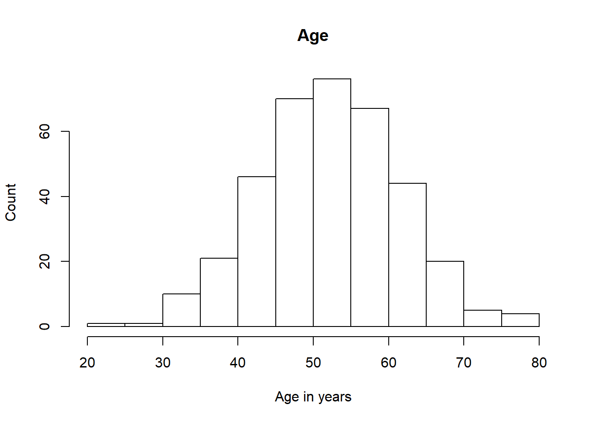
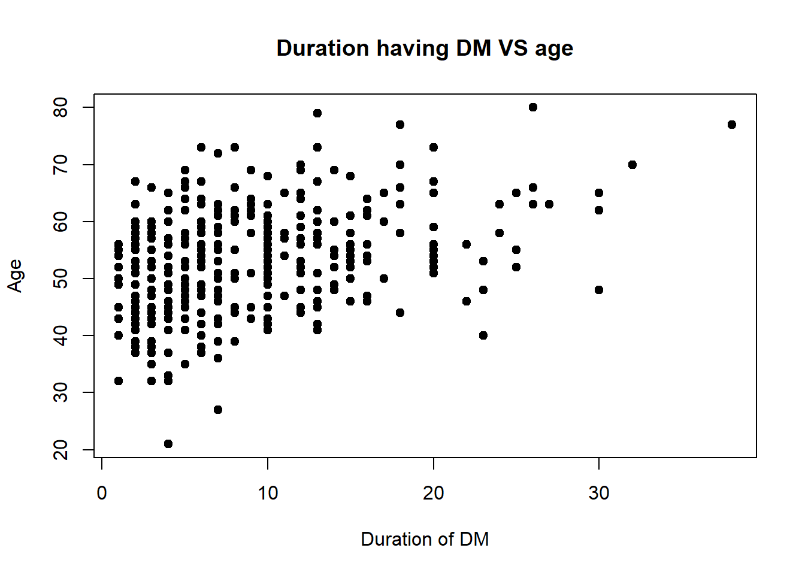

7 Graphing or Plotting data
You must ask yourselves these: 1. Which variable do you want to plot? 2. What is the type of that variable? Factor? Numerical? 3. Are you going to plot another variable together?
7.1 One variable: A categorical or factor variable
We can create a simple barchart
dist.sex<-table(dataSPSS$sex)
barplot(dist.sex,
main='Sex distribution',
xlab='Sex')
7.2 One variable: A numerical variable
histogram
hist(dataSPSS$age, main = 'Age',
xlab='Age in years',
ylab='Count')
7.3 Two variables : A numerical with another numerical variable
We will use scatterplot to plot
plot(dataSPSS$tahundx, dataSPSS$age,
main = 'Duration having DM VS age',
xlab = 'Duration of DM', ylab = 'Age',
pch = 19)
Let us make a fit line
plot(dataSPSS$tahundx, dataSPSS$age,
main = 'Duration having DM VS age',
xlab = 'Duration of DM', ylab = 'Age',
pch = 19)
abline(lm(dataSPSS$age~dataSPSS$tahundx), col = 'red')and a lowess
plot(dataSPSS$tahundx, dataSPSS$age,
main = 'Duration having DM VS age',
xlab = 'Duration of DM', ylab = 'Age',
pch = 19)
lines(lowess(dataSPSS$tahundx,dataSPSS$age), col = 'blue')7.4 Two variables : A categorical variable with a categorical variable
Now, we will plot 2 categorical variables simultenously.
First, we will use stacked barchart
compl.sex<-table(dataSPSS$complica,dataSPSS$sex)
compl.sex##
## female male
## no 105 120
## yes 48 92barplot(compl.sex,
main='Complications by sex',
xlab='Sex',
col=c('blue','red'),
legend=c('No','Yes'))
Next, we will use grouped barchart
compl.sex##
## female male
## no 105 120
## yes 48 92barplot(compl.sex,
main = 'Complications according to sex',
xlab = 'Sex',
col = c('blue','red'),
legend = c('no','yes'),
beside = TRUE)